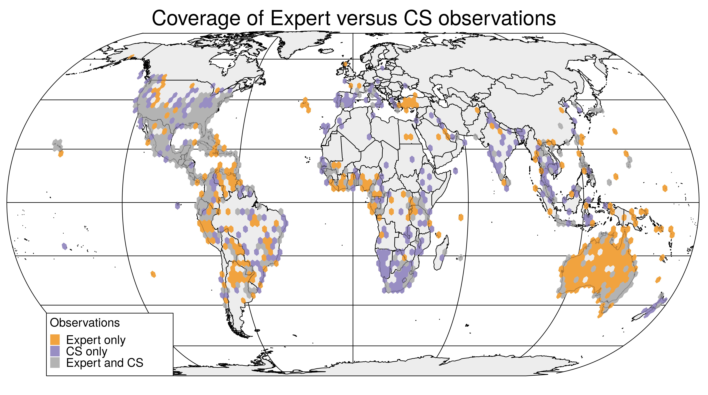
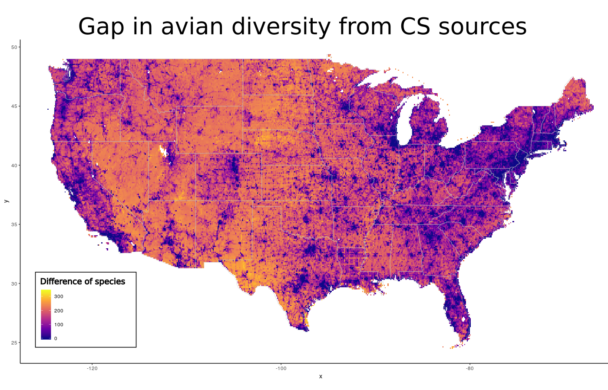
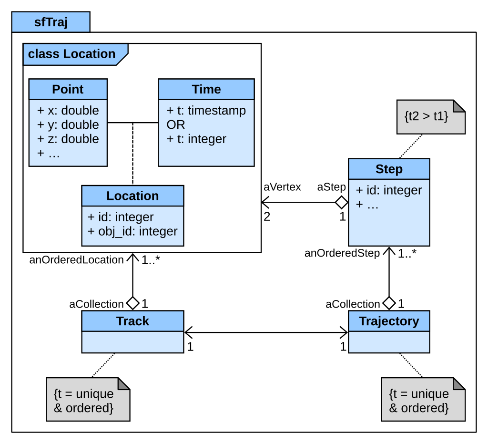
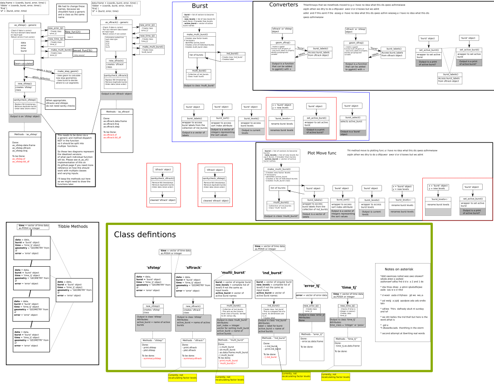
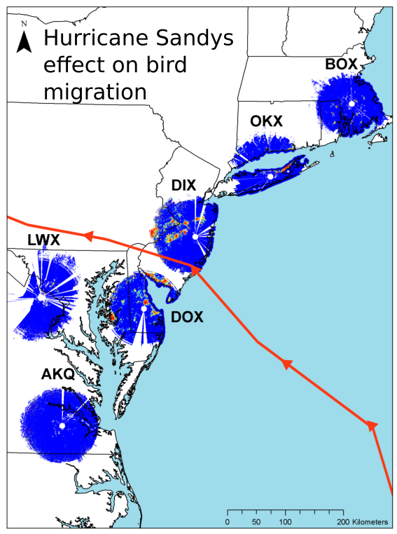
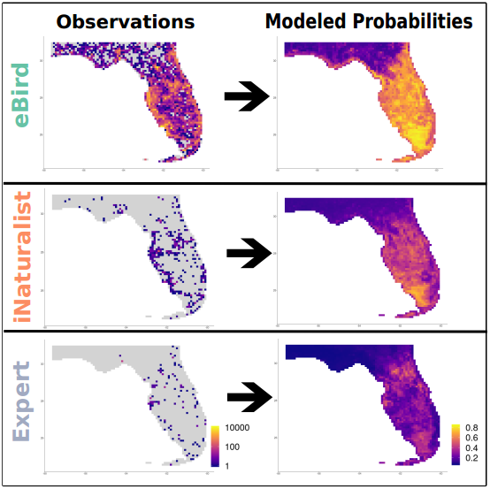
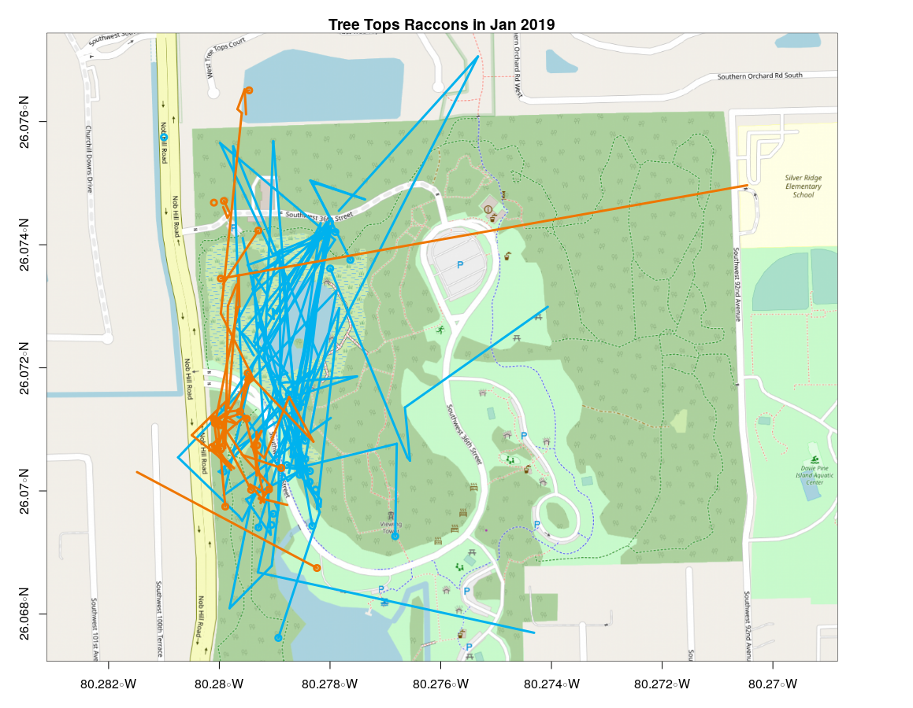
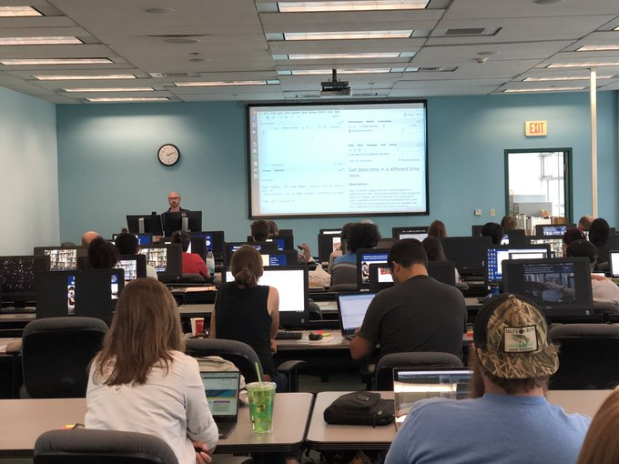

Matthew E. Boone
Interview - Software Engineer III (Idaho Fish and Game)
github.com/birderboone
Summary
- Brief History
- Citizen Science
- Spatial Applications
- Database management
- Software Development
- Teaching
History
| Time | Job |
|---|---|
| 2005 - 2009 | BSc Ecology, Evolution, Behavior - University of Texas |
| 2009 - 2013 | Field work (Oregon, Nevada, Hawaii, etc...) |
| 2014 - 2016 | MSc Wildlife Ecology - University of Delaware |
| 2016 - 2017 | DB Manager & Analyst - Kauai Endangered Seabird Recovery Project (KESRP) |
| 2017 - 2019 | Independent Data Consultant - Porzana Data Solutions |
| 2018 - 2020 | DB Manager & Biologist - University of Florida : Ft. Lauderdale Extension Center |
"I am a software developer trained as an ecologist who wants to build applications and software for biologists and the public.
I want to help scientists collect data easier and make the science more accessible to the public."
Working with Citizen Science

- eBird reviewer for 8 years
- iNaturalist
- Lead bird walks
- UF Broward County Bioblitz co-coordinator
Working with Citizen Science - GBIF

- Global Biodiversity Information Facility (GBIF)
- Citizen Science (CS) and expert data sets can complement each other when used effectively.
Hochmair, H., Scheffrahn, R., Basille, M., Boone, M. Evaluating the data quality of iNaturalist termite records.
PLoSONE (2020) 15.5: e0226534. 10.1371/journal.pone.0226534
PLoSONE (2020) 15.5: e0226534. 10.1371/journal.pone.0226534
Working with Citizen Science Data - Data Gaps

- 264M US avian records
- PostGRES w/ PostGIS extension
- 10+ raster layers (environmental, geographic, topographic)
Spatial Apps - nestR

- Built in Shiny (r/html app tool)
- Calculate nesting locations from GPS points
- Spatially explore points with Leaflet
- Available R package on github picardis/nestR
Spatial Apps - eBird Filter apps

- Built in Shiny (r/html app tool)
- Help Tx eBird reviewers create accurate species filters for 254 counties
- Identify problematic county filters
- Explore species presence through time
Launch App




Technology history
Masters (2014 - 2016) :
- Windows OS
- mySQL for eBird analysis
- Radar analysis in arcGIS and R
- Translated SAS code to R.

Technology history
- Masters :
- KESRP (2016 - 2017):
- Windows OS
- Field collection on iPads via iForm
- Synced to an AccessDB via VDB
- Lab GUI in arcGIS
Technology history
- Masters :
- KESRP :
- UF - Ft. Lauderdale Extension (2018 - 2020) :
- Linux (Ubuntu/Debian)
- postGRES/PostGIS for data & raster layers
- Managed through pgAdmin and R
- DBs connection to QGIS
- Version history in git stored on Github & GitLab
- Website/presentations with Html & CSS using Hugo, Jekyll, & Slidy interfaces
- Documentation and manuscripts written in Markdown typeset language
- Interactive Bookdowns for Manuscripts

Software Development
- radaR : 2016
- nestR : 2018
- refsplitR : 2019
- sftrack : 2020
Software Development - Sftrack
- Unifying standard for movement data in R
- Continuous integration development
- Nightly Build framework
- Constant unit tests w/ travis-ci
- Transparent build process
- github.com/mablab/sftrack

Sftrack : From concept to submission
Planning meetings and original outlines
Sftrack : From concept to submission
... to Beta stage
Teaching

Thank you!
You can view this presentation at : http://birderboone.github.io/idfgSE
And find the assets at http://github.com/birderboone/idfgSE
And find the assets at http://github.com/birderboone/idfgSE